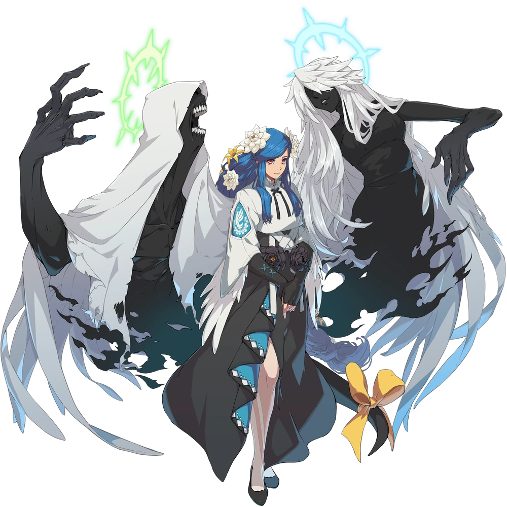
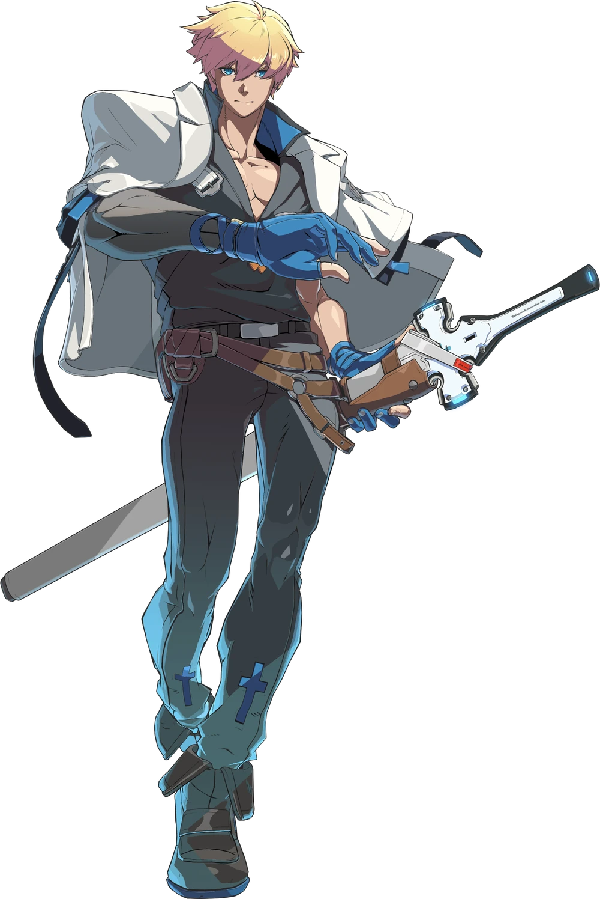
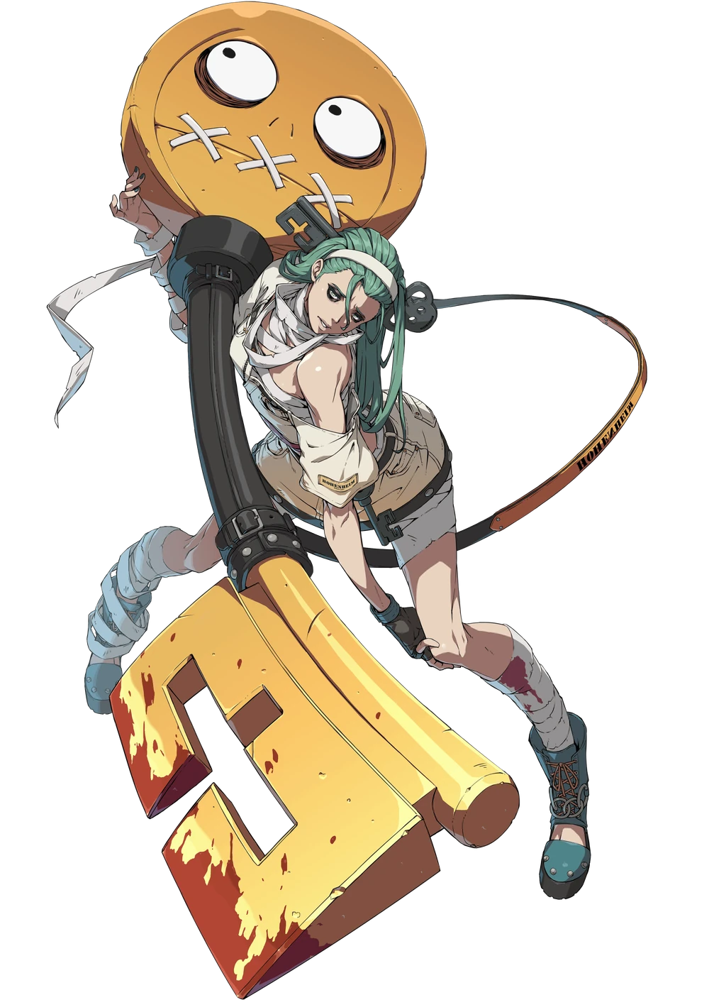

Alright 2 days later and the path forward for a good long while is laid before me.
Current Major Goal
Maximum Effort:
Guilty Gear Cosplays

Charlie Marlie: Queen Dizzy

Kristian: Ky Kiske

Rose: A.B.A
(To be clear I didn't make these assets. They are from Guilty Gear. :3)
Explanation
This is a big one. So much so that I plan on doing a number of other tasks in preparation. Maximum Effort to me, means not making this my first attempt at the skills involved. If I'm gonna cosplay Queen Dizzy, then I'm gonna really have to prepare for it.
Learn to Sew
Description: Develop basic sewing skills.
Purpose: Before doing anything else regarding my major goal, I'd like to just develop a familiarity with sewing.
Minimum Acheivement: TBD
Goal: TBD
Learn to Make Hypermotion Tails
Description: Make some tails!
Purpose: Making a kitty and/or wolf tail sounds fun, and would help familiarize myself with the process before making Dizzy's.
Minimum Acheivement: TBD
Goal: TBD
Learn to Make Angel Wings
Description: Make some wings!
Purpose: Get used to the process so I can make Dizzy's strange arm wing things.
Minimum Acheivement: TBD
Goal: TBD
Learn to 3D Print?
Description: Learn the basics of 3D printing.
Purpose: Not sure if this one is neccessary tbh, but Scott said he might hold a worskshop or something and I think it would be fun to hold him to his word.
Minimum Acheivement: TBD
Goal: TBD
Cosplay Shikako
Description: Create a cosplay for Shikako and wear it at a con.
Purpose: This should be a little less intimidating of a cosplay than Dizzy for me, so I can get my feet wet. This is the one I'm gonna be learning as I do, as opposed to the max effort major goal.
Minimum Acheivement: TBD
Goal: TBD
Current Tasks
Learn to Sew
Description: Develop basic sewing skills.
Purpose: Before doing anything else regarding my major goal, I'd like to just develop a familiarity with sewing.
Minimum Acheivement: TBD
Goal: TBD
Beat Terraria
Description: Beat Terraria.
Purpose: Finally stick it out and beat this damn game.
Minimum Acheivement: Beat the game once by crafting the Zenith.
Goal: Beat a Zenith Run, Beat an Everything Run
Learn to Sew and Beat Terraria all while unpacking and preparing for Emi to be here. Also I'm gonna visit my mom sometime soon. Gotta lock in on those tickets this weekend.
I got so much done today!!! And I made cookies for Kristian!!! I'm super duper proud of myself!!!
*insert smug anime girl gif*
I'll check back in some time in the future. For now I have lots and lots to do!